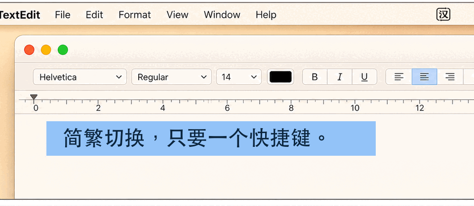

双向转换
再按一次，就能转换回来。

再按一次，就能转换回来。
转换完成后尽可能恢复原来的内容。
支持配备 Apple 芯片或 Intel 处理器的 Mac。
将 HanToggle 拖入“应用程序”。
启用 HanToggle 的辅助功能权限。
按下你设置的快捷键。
常见问题
HanToggle 是一款 macOS 菜单栏工具，用一个全局快捷键在原位置转换选中的简体或繁体中文。
选中文字，按下你为 HanToggle 设置的快捷键。转换结果会替换原文；再按一次即可转换回来。
不会。转换在 Mac 本机完成，不使用网络转换、分析或遥测，也不会记录选中或转换的文字。
HanToggle 需要 macOS 13 或更高版本。发布版支持 Apple 芯片和 Intel 处理器。
是。HanToggle 可免费下载，并以 MIT 许可证开源。安装包和源代码都发布在 GitHub。